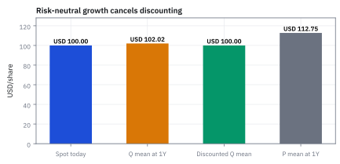
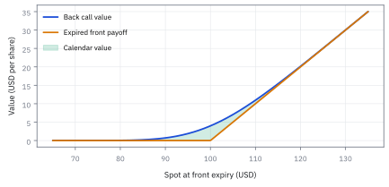

13.6 Girsanov and the Risk-Neutral Measure
คูณน้ำหนัก $e^{-\lambda W_T-\frac12\lambda^2T}$ ให้ทุกเส้นทาง แล้ว drift ของหุ้นกลายเป็นดอกเบี้ยโดยความผันผวนไม่เปลี่ยน ราคาของสัญญาจึงคิดจากโลกนั้นได้ โดยไม่ต้องรู้ว่าหุ้นจะโตเท่าไร
หุ้นสมมติราคา \$100 ตัวเดียวกับรูปของ 13.2 มี drift 12% ความผันผวน 28% ต่อปี ดอกเบี้ยปลอดความเสี่ยง 2% ลูกค้าขอราคาสัญญา digital ที่จ่าย \$1 ถ้าปีหน้าหุ้นปิดเหนือ \$110 นักวิเคราะห์คิดโอกาสจากแบบจำลองได้ 47.93% คิดลดหนึ่งปีได้ $e^{-0.02}(0.4793)=\$0.4698$ ควรเสนอราคานี้ไหม?
ลองตอบก่อนเปิดเฉลย
ไม่ควร ราคาที่ไม่เปิดช่องให้ใครทำกำไรแน่นอนคือ \$0.3345 ซึ่งใช้โอกาส 34.13% ของโลกที่หุ้นโตเท่าดอกเบี้ย ไม่ใช่ 47.93% ของโลกจริง ส่วนต่าง \$0.1353 ต่อสัญญาคือเงินที่คนอื่นเก็บได้โดยขายสัญญาให้เราแล้ว hedge ด้วยหุ้น (บทที่ 14) และคนที่เชื่อว่าหุ้นโตแค่ 5% ก็ได้ราคา \$0.3345 เท่ากัน
สิ่งที่เราจะสร้าง
13.2 บอกว่าค่าเฉลี่ยของ $e^{\sigma W-\sigma^2t/2}$ คงที่ที่ 1 และ 13.5 ให้กฎผลคูณ หน้านี้ใช้สองเรื่องนั้นสร้างโลกที่สอง ชื่อ $Q$ ที่เส้นทางทุกเส้นเหมือนเดิม แต่แต่ละเส้นมีน้ำหนักใหม่ เลือกน้ำหนักให้ราคาหุ้นที่คิดลดด้วยดอกเบี้ยไม่มี drift แล้วในโลกนั้นราคาของทุกสัญญาคือค่าเฉลี่ยของเงินที่จ่าย คิดลดกลับ
เริ่มจากหนึ่งวันของ SPY ด้วยมือ แล้วสร้างน้ำหนักแบบต่อเนื่อง พิสูจน์ว่ามันรวมเป็น 1 และย้าย drift ใช้กฎผลคูณหา $\lambda$ ตัวเดียวที่ใช้ได้ ตอบโจทย์ digital เทียบสองโลก แสดงว่า drift ของหุ้นหายไปจากราคา แล้วตรวจด้วยการสุ่มสองทาง
ศัพท์ที่ใช้ในหัวข้อนี้
- Physical measure $P$
- น้ำหนักโอกาสที่พยายามบอกความถี่ของเหตุการณ์จริง ใช้ทำคำทาย stress test และวัดความเสี่ยงเช่น VaR
- Risk-neutral measure $Q$
- น้ำหนักโอกาสที่ทำให้ราคาที่คิดลดของทุกสิ่งที่ซื้อขายได้เป็น martingale (4.1) ใช้ตั้งราคา ไม่ใช่คำทายโลกจริง
- Radon–Nikodym derivative $dQ/dP$
- ตัวคูณน้ำหนักของแต่ละเส้นทาง คือน้ำหนักใหม่หารด้วยน้ำหนักเก่า ใช้แปลงค่าเฉลี่ยใต้ $P$ เป็นค่าเฉลี่ยใต้ $Q$: $\mathbb E^Q[X]=\mathbb E^P[Z\,X]$
- Market price of risk $\lambda$
- $(\mu-r)/\sigma$ ผลตอบแทนส่วนเกินต่อความผันผวนหนึ่งหน่วย คือ Sharpe ratio ของหุ้น บอกว่าต้องเอียงน้ำหนักมากแค่ไหน
- Girsanov theorem
- ผลที่ว่าใต้น้ำหนัก $e^{-\lambda W_T-\frac12\lambda^2T}$ process $W_t+\lambda t$ เป็น Brownian motion ใช้ย้าย drift โดยไม่แตะความผันผวน
- Digital option
- สัญญาที่จ่ายเงินก้อนคงที่ถ้าราคาปลายทางเกินระดับที่กำหนด ราคาของมันคือโอกาสใต้ $Q$ คิดลด จึงเป็นตัวอย่างที่เห็น $Q$ ชัดที่สุด
สัญลักษณ์และหน่วย
| สัญลักษณ์ | ความหมาย | หน่วย |
|---|---|---|
| $P,\ Q$ | น้ำหนักโอกาสของโลกจริง และของการตั้งราคา | — |
| $S_t,\ \mu,\ \sigma$ | ราคาหุ้น, drift ใต้ $P$, ความผันผวน | \$ ต่อหุ้น, ต่อปี, ต่อ $\sqrt{\text{yr}}$ |
| $r$ | ดอกเบี้ยปลอดความเสี่ยงแบบทบต้นต่อเนื่อง | ต่อปี |
| $\lambda$ | market price of risk | ต่อ $\sqrt{\text{yr}}$ |
| $W_t,\ W_t^Q$ | Brownian motion ใต้ $P$ และ $W_t+\lambda t$ ซึ่งเป็น Brownian motion ใต้ $Q$ | $\sqrt{\text{yr}}$ |
| $Z_t$ | น้ำหนักของเส้นทาง $dQ/dP$ ถึงเวลา $t$ | ไม่มีหน่วย |
| $H_T,\ V_0$ | เงินที่สัญญาจ่ายที่ $T$ และราคาวันนี้ | \$ |
ขั้นที่ 1 — หนึ่งวันของ SPY ด้วยมือ: เปลี่ยนน้ำหนัก ไม่เปลี่ยนหน้าเหรียญ
โจทย์ให้อะไรมาบ้าง: SPY \$520 พรุ่งนี้เป็น \$526 หรือ \$514 โลกจริงให้น้ำหนักขาขึ้น 0.55 ขาลง 0.45 ดอกเบี้ยของหนึ่งวันเล็กมาก ในขั้นนี้สมมติเป็นศูนย์ หาน้ำหนักชุดใหม่ที่ทำให้ค่าเฉลี่ยของราคาพรุ่งนี้เท่ากับราคาวันนี้ แล้วเขียนเป็นตัวคูณของน้ำหนักเดิม
คำตอบ: หน้าเหรียญเหมือนเดิม ราคาเหมือนเดิม เปลี่ยนแค่น้ำหนัก ขาขึ้นถูกลดลงด้วยตัวคูณ 0.909 ขาลงถูกเพิ่มด้วย 1.111 ตัวคูณเฉลี่ยใต้น้ำหนักเดิมได้ 1 พอดี และค่าเฉลี่ยใต้ $Q$ คือค่าเฉลี่ยใต้ $P$ ของตัวคูณคูณราคา ได้ \$520 เท่ากับวันนี้ ส่วน \$0.60 ที่เกินมาใต้ $P$ คือผลตอบแทนที่คาดว่าจะได้จากการรับความเสี่ยง
ตรวจเองใน 10 วินาที: $0.55(0.909)=0.50$ และ $0.45(1.111)=0.50$ ตัวคูณแค่ย้ายน้ำหนักไปจากหน้าที่โลกจริงชอบ ไม่ได้สร้างหรือลบหน้าไหน
ขั้นที่ 2 — น้ำหนักแบบต่อเนื่องของหุ้นในโจทย์
ในเวลาต่อเนื่อง แต่ละเส้นทางถูกแทนด้วยปลายทาง $W_T$ ของมัน ตัวคูณที่ลดน้ำหนักเส้นที่ขึ้นแรงและเพิ่มเส้นที่ลงแรงแบบเรียบ ๆ คือ exponential ของ $-\lambda W_T$ บวกค่าคงที่ที่ทำให้น้ำหนักรวมเป็น 1 (ขั้นที่ 3) บรรทัดแรกเป็นนิยาม ส่วน $\lambda$ จะหาในขั้นที่ 5 ตอนนี้ใช้ค่าที่ได้ล่วงหน้า $\lambda=(0.12-0.02)/0.28$
เส้นทางที่จบที่ $W_1=+1$ ถูกลดน้ำหนักลงราว 34% เส้นที่จบที่ $-1$ ถูกเพิ่มราว 34% โลก $Q$ จึงให้น้ำหนักกับความเลวร้ายมากกว่าโลกจริง นี่คือการคิดราคาของความเสี่ยงเข้าไปในโอกาส น้ำหนักเท่ากับ 1 พอดีที่ $W_1=-\lambda/2=-0.179$
Figure 13.6a — เส้นทางเดิม น้ำหนักใหม่

ขั้นที่ 3 — ทำไมน้ำหนักรวมเป็น 1 ทุกเวลา
13.2 ขั้นที่ 4 (c) พบว่า $e^{\sigma W_t-\sigma^2t/2}$ ไม่มี drift ใส่ $\sigma=-\lambda$ ได้ $Z_t$ พอดี ใช้ Itô กับมันอีกครั้งให้เห็นส่วนสุ่ม แล้วเอาค่าเฉลี่ย
$dZ$ มีแต่ส่วนสุ่ม จึงเป็น Itô integral ที่ค่าเฉลี่ยคงที่ (13.3 ขั้นที่ 5) มองจากเวลาไหนก็ได้ค่าเฉลี่ยของน้ำหนักปลายทางเท่ากับน้ำหนักตอนนั้น น้ำหนักจึงสอดคล้องกันทุกเวลา และรวมทั้งหมดเป็น 1 ซึ่ง $Q$ ต้องมีจึงจะเป็นชุดโอกาส
พจน์ $-\tfrac12\lambda^2T$ มีไว้เพื่อหักล้าง Itô correction ถ้าลืมมัน น้ำหนักรวมกันได้ 1.0659 ทุกราคาที่คิดด้วยน้ำหนักนั้นจะสูงเกิน 6.6%
ขั้นที่ 4 — ใต้ Q ระฆังเลื่อน แต่ความกว้างเท่าเดิม
density ของ $W_T$ ใต้ $Q$ คือ density ใต้ $P$ คูณน้ำหนัก เติมกำลังสองในเลขชี้กำลังแบบที่ 10.2 ใช้หาค่าเฉลี่ยของ lognormal
คูณน้ำหนักแล้วได้ระฆังความกว้างเดิมที่จุดกลางเลื่อนไป $-\lambda T$ การเปลี่ยนน้ำหนักจึงย้ายแค่จุดกลาง ไม่แตะความกว้าง บวก $\lambda t$ กลับเข้าไปก็ได้ Brownian motion ที่เริ่มจากศูนย์ บรรทัดนี้ดูแค่ปลายทาง Girsanov theorem (ยกมาใช้) บอกว่าทั้งเส้นทาง $W_t^Q$ เป็น Brownian motion ใต้ $Q$ ไม่ใช่แค่ปลายทาง
ขั้นที่ 5 — หา λ ด้วยกฎผลคูณ: ราคาที่คิดลดต้องไม่มี drift
ต้องการให้ราคาหุ้นที่คิดลด $\tilde S_t:=e^{-rt}S_t$ มีค่าเฉลี่ยคงที่ใต้ $Q$ เพราะถ้าโตเร็วกว่าเงินฝาก ใครก็กู้เงินซื้อหุ้นได้กำไรในโลกนั้น ค่าเฉลี่ยใต้ $Q$ คือค่าเฉลี่ยใต้ $P$ ของ $Z\tilde S$ จึงใช้กฎผลคูณของ 13.5 กับ $Z\tilde S$ ใต้ $P$ โดย $d\tilde S=\tilde S\big((\mu-r)\,dt+\sigma\,dW\big)$
พจน์ $\tilde S\,dZ$ ไม่มี drift เพราะ $dZ$ มีแต่ส่วนสุ่ม drift ทั้งหมดจึงมาจาก $Z\,d\tilde S$ ซึ่งให้ $\mu-r$ และพจน์ไขว้ซึ่งให้ $-\lambda\sigma$ มีค่า $\lambda$ ค่าเดียวที่หักล้างกันพอดี ไม่ใช่ทางเลือกตามความเห็น
ในภาษาของ $W^Q$: แทน $dW=dW^Q-\lambda\,dt$ ใน SDE ได้ $dS/S=(\mu-\sigma\lambda)\,dt+\sigma\,dW^Q=r\,dt+\sigma\,dW^Q$ ใต้ $Q$ หุ้นโตเท่าดอกเบี้ย และความผันผวนยังเป็น 28%
ขั้นที่ 6 — สูตรตั้งราคา: ค่าเฉลี่ยใต้ Q แล้วคิดลด
หลักของการตั้งราคาที่ไม่มีเงินฟรี (ยกมาใช้ บทที่ 14 จะสร้างพอร์ตเลียนแบบที่ทำให้มันเป็นจริง) คือราคาที่คิดลดของทุกสิ่งที่ซื้อขายได้เป็น martingale ใต้ $Q$ แบบเดียวกับหุ้นในขั้นที่ 5 อ่านสมบัตินั้นที่เวลา 0 กับสัญญาที่จ่าย $H_T$ แล้วตรวจกับหุ้นเอง
ตัวคิดลดดึงออกนอกค่าเฉลี่ยได้เพราะดอกเบี้ยคงที่ ตรวจกับหุ้น: ค่าเฉลี่ยใต้ $Q$ โต 2% เป็น \$102.02 เท่ากับฝากเงินเฉย ๆ คิดลดกลับได้ \$100 พอดี ค่าเฉลี่ยใต้ $P$ \$112.75 เป็นคำทายที่ดีกว่า แต่คิดลดแล้วได้ \$110.52 ซึ่งไม่ใช่ราคาของอะไรเลย
Figure 13.6c — ค่าเฉลี่ยใต้ Q คิดลดกลับได้ราคาวันนี้

ขั้นที่ 7 — คำตอบของโจทย์เปิดเรื่อง: digital ที่ \$110 ในสองโลก
โจทย์ให้อะไรมาบ้าง: สัญญาจ่าย \$1 ถ้า $S_1\gt110$ จุดกลางของ $\ln(S_1/S_0)$ คือ drift ลบ $\tfrac12\sigma^2=0.0392$ (13.2) ใต้ $P$ ได้ $0.12-0.0392=0.0808$ ใต้ $Q$ ได้ $0.02-0.0392=-0.0192$ ความผันผวน 0.28 เท่ากันทั้งสองโลก
คำตอบ: ราคาคือ \$0.3345 ไม่ใช่ \$0.4698 โอกาสสองตัวต่างกัน 13.81 จุด ทั้งที่เกณฑ์และความผันผวนเหมือนกัน ต่างกันแค่จุดกลาง ตัวเลข 34.13% คือ $\Phi(d_2)$ ในสูตร Black–Scholes ของบทที่ 14 มันไม่เคยเป็นโอกาสที่หุ้นจะปิดเหนือ \$110 ในโลกจริง
ตรวจเองใน 10 วินาที: $0.4793-0.3413=0.1380$ (ค่าเต็ม $0.4793352-0.3412827=0.1380525$) และ $e^{-0.02}\approx0.9802$ คูณ 0.3413 ได้ 0.3345
Figure 13.6b — การกระจายของราคาในโลกจริงกับในโลกที่ใช้ตั้งราคา

ขั้นที่ 8 — drift ของหุ้นหายไปจากราคา
นักวิเคราะห์อีกคนเชื่อว่าหุ้นตัวนี้โตแค่ 5% ต่อปี ลองคิดทั้งสองโลกด้วยความเชื่อนี้ และดูว่า $\lambda$ ค่าอื่นทำอะไรกับ drift ใต้น้ำหนักใหม่
สองคนเห็นต่างเรื่องโลกจริง (47.93% กับ 38.14%) แต่ได้ $Q$ และราคาเดียวกัน เพราะใต้ $Q$ drift ของหุ้นถูกแทนด้วย $r$ เสมอ ไม่ว่า $\mu$ เดิมจะเป็นเท่าไร ความเห็นเรื่อง $\mu$ เปลี่ยนแค่ $\lambda$ ซึ่งเป็นตัวกลางที่หักล้างตัวเองออกไป
ถ้าเลือก $\lambda$ ผิด หุ้นในโลกตั้งราคาโตเร็วหรือช้ากว่าเงินฝาก ที่ $\lambda=0$ หุ้นโต 12% ขณะกู้ได้ที่ 2% ราคาที่คิดจากโลกนั้นเปิดช่องให้กู้เงินซื้อหุ้นแล้วได้ส่วนเกินฟรี
ขั้นที่ 9 — median ในสองโลก: Q ไม่ใช่คำทาย
ใช้สูตร median ของ 13.2 กับ drift ของแต่ละโลก และดูว่าโลก $Q$ พูดอะไรเกี่ยวกับราคาปีหน้า
ใต้ $Q$ median ของราคาปีหน้าต่ำกว่าวันนี้ ถ้าอ่านเป็นคำทาย นี่คือการบอกว่าหุ้นที่ drift 12% น่าจะลง ซึ่งไม่มีใครเชื่อ แต่ $Q$ ไม่ได้ทำหน้าที่ทาย มันทำหน้าที่ให้ราคาที่ไม่มีเงินฟรี ห่างกัน \$10.32 คือระยะที่ความเสี่ยงถูกตีราคาเข้าไปในน้ำหนัก
ขั้นที่ 10 — ตรวจด้วยการสุ่มสองทาง
โจทย์ให้อะไรมาบ้าง: โค้ดท้ายหน้าสุ่ม $W_1$ ใต้ $P$ 200,000 ครั้ง ด้วย seed 136 ทางที่หนึ่ง คูณแต่ละครั้งด้วยน้ำหนัก $Z_1$ แล้วเฉลี่ย ทางที่สอง สุ่มราคาใหม่ด้วย drift $r$ ตรง ๆ แล้วนับ ถ้า Girsanov ถูก สองทางต้องตรงกัน
| ค่า | ทฤษฎี | ได้จากการสุ่ม | ห่างกี่ SE |
|---|---|---|---|
| ค่าเฉลี่ยของ $Z_1$ | 1 | 0.99998 | 0.0 |
| $\mathbb E^P[Z_1S_1]$ | 102.020 | 102.023 | +0.1 |
| $\mathbb E^P[Z_1\,1\{S_1\gt110\}]$ | 0.3413 | 0.3416 | +0.4 |
| สัดส่วน $S_1\gt110$ ไม่ถ่วงน้ำหนัก | 0.4793 | 0.4795 | — |
| สัดส่วนเมื่อสุ่มด้วย drift $r$ | 0.3413 | 0.3417 | — |
คำตอบ: เส้นทางชุดเดียวกันให้ 47.95% ถ้านับตรง ๆ และให้ 34.16% ถ้าถ่วงน้ำหนัก ซึ่งตรงกับการสุ่มใหม่ในโลกที่หุ้นโตเท่าดอกเบี้ย (34.17%) นี่คือความหมายของการเปลี่ยน measure: ไม่ต้องสร้างเส้นทางใหม่ แค่ชั่งน้ำหนักใหม่
ตรวจเองใน 10 วินาที: SE ของสัดส่วนที่ไม่ถ่วงน้ำหนักคือ $\sqrt{0.48(0.52)/200{,}000}=0.0011$ แถวที่สี่ห่างทฤษฎี 0.00013 ราว 0.1 SE
คำถามที่ควรถามออกมาดัง ๆ
ถ้าราคาไม่ขึ้นกับ drift แล้วใครเป็นคนจ่ายค่าความเสี่ยง? ความเสี่ยงถูกตีราคาไปแล้วในราคาหุ้นวันนี้ digital ถูกตั้งราคาเทียบกับหุ้น ไม่ใช่เทียบกับความเห็นของใคร ใครเชื่อ 12% หรือ 5% ก็ซื้อหุ้นวันนี้ที่ \$100 เท่ากัน สัญญาที่ hedge ด้วยหุ้นได้จึงได้ราคาเดียวกันด้วย
โลกที่ drift เท่าดอกเบี้ยมีอยู่จริงไหม? ไม่ต้องมี มันเป็นอุปกรณ์คำนวณ ชื่อ risk-neutral ชวนเข้าใจผิดว่านักลงทุนไม่กลัวความเสี่ยง ที่จริงความกลัวถูกย้ายจาก drift ไปอยู่ในน้ำหนัก ซึ่งเพิ่มน้ำหนักให้เส้นทางที่เลวร้ายราว 34% ในโจทย์นี้
ทำไม VaR ต้องใช้ $P$? เพราะ VaR ถามว่าพอร์ตจริงจะเสียเท่าไรในโลกที่มันอยู่ ขั้นที่ 9 เห็นแล้วว่า $Q$ เลื่อนทุกอย่างลง ถ้าคิด VaR ใต้ $Q$ จะได้ตัวเลขที่เลวร้ายเกินจริงสำหรับหุ้นที่มี drift บวก (pitfall ข้อ 2)
ความผิดที่ให้ตัวเลขผิดโดยไม่มีใครเตือน
ตั้งราคาด้วยโอกาสใต้ $P$: digital ถูกเสนอที่ \$0.4698 แทน \$0.3345 แพงเกิน 40% ถ้าโต๊ะเสนอซื้อที่ราคานั้น คนอื่นจะขายให้แล้ว hedge ได้กำไร \$0.1353 ต่อสัญญาโดยไม่รับความเสี่ยงของหุ้น
วัดความเสี่ยงใต้ $Q$: ราคาหุ้นที่ quantile 5% ของปีหน้าใต้ $P$ คือ $100e^{0.0808-1.645(0.28)}=\$68.40$ ใต้ $Q$ ได้ \$61.89 VaR 95% ของหุ้นหนึ่งหุ้นจึงถูกรายงานเป็น \$38.11 แทน \$31.60 เกินจริง 21% เพราะโลก $Q$ ถูกตั้งให้หุ้นโตแค่ 2%
ลืม $-\tfrac12\lambda^2T$ ในน้ำหนัก: น้ำหนักรวมกันได้ 1.0659 ไม่ใช่ 1 ราคา digital ที่คิดจากน้ำหนักนี้กลายเป็น \$0.3566 สูงเกิน 6.6% และทุกราคาในระบบเพี้ยนขึ้นเท่ากัน
ใช้ทำอะไรบนโต๊ะจริง
ทุกระบบตั้งราคา derivative ใช้ $Q$: สุ่มเส้นทางด้วย drift $r$ (หรือถ่วงน้ำหนักเส้นทางเดิม) เฉลี่ยเงินที่จ่าย แล้วคิดลด ระบบความเสี่ยงใช้ $P$ ทีมที่ใช้ระบบเดียวทำทั้งสองงานต้องแยกให้ชัดว่า drift ที่ใส่คือตัวไหน
13.7 จะเปลี่ยนสูตร $V_0=e^{-rT}\mathbb E^Q[H_T]$ ให้เป็นสมการเชิงอนุพันธ์ย่อยด้วย Feynman–Kac และบทที่ 14 จะแสดงว่าราคานี้คือต้นทุนของพอร์ตหุ้นกับเงินสดที่เลียนแบบเงินที่สัญญาจ่ายได้ทุกเส้นทาง
สามโจทย์ตรวจความเข้าใจ
1. หุ้น \$200 drift 10% ความผันผวน 30% ดอกเบี้ย 4% หา $\lambda$ โอกาสปิดเหนือ \$220 ในหนึ่งปีใต้ $P$ และใต้ $Q$ และราคา digital \$1
เฉลย
$\lambda=0.06/0.30=0.20$ และ $\ln1.1=0.09531$ ใต้ $P$ จุดกลางคือ $0.10-0.045=0.055$ ได้ $z=0.1344$ โอกาส 44.66% ใต้ $Q$ จุดกลางคือ $0.04-0.045=-0.005$ ได้ $z=0.3344$ โอกาส 36.91% ราคา $e^{-0.04}(0.3691)=\$0.3546$ ห่างกัน 7.75 จุด น้อยกว่าโจทย์หลักเพราะ Sharpe ratio 0.20 ต่ำกว่า 0.357
2. SPY \$520 drift 8% ความผันผวน 18% สมมติดอกเบี้ย 4% digital จ่าย \$1 ถ้าปีหน้า SPY ปิดเหนือ \$572 (ขึ้น 10%) ราคาเท่าไร และโอกาสในโลกจริงเท่าไร?
เฉลย
$\lambda=0.04/0.18=0.2222$ จุดกลางของ log ใต้ $P$ คือ 0.0638 (13.2) ได้ $1-\Phi((0.09531-0.0638)/0.18)=1-\Phi(0.1751)=43.05\%$ ใต้ $Q$ คือ $0.04-0.0162=0.0238$ ได้ $1-\Phi(0.3973)=34.56\%$ ราคา $e^{-0.04}(0.3456)=\$0.3320$ ถ้าตั้งด้วย 43.05% จะได้ \$0.4136
3. ในขั้นที่ 1 ถ้าดอกเบี้ยของวันนั้นทำให้ \$520 วันนี้โตเป็น \$520.08 พรุ่งนี้ น้ำหนักขาขึ้นใต้ $Q$ ต้องเป็นเท่าไร?
เฉลย
ต้องให้ค่าเฉลี่ยของราคาพรุ่งนี้เท่ากับเงินฝาก: $526q+514(1-q)=520.08$ ได้ $12q=6.08$ คือ $q=0.5067$ น้ำหนักขาขึ้นเพิ่มนิดหน่อยเพื่อให้หุ้นโตเท่าดอกเบี้ย นี่คือเงื่อนไขเดียวกับขั้นที่ 5 ในแบบหนึ่งก้าว
คำนวณซ้ำด้วย JavaScript
รันใน Node.js ได้โดยไม่ต้องติดตั้งอะไร โค้ดคิด $\lambda$ น้ำหนักของเส้นทาง โอกาสใต้ $P$ และ $Q$ และราคา digital แล้วสุ่มสองทางด้วยเครื่องสุ่มที่มี seed: ถ่วงน้ำหนักเส้นทางของโลกจริง กับสุ่มใหม่ด้วย drift $r$ ฟังก์ชันปฏิเสธ input ที่ไม่มีความหมาย และพิมพ์ JSON บรรทัดเดียว
// Standard Normal CDF: Simpson's rule on the bell curve from 0 to |x| (1.9).
function Phi(x) {
if (!Number.isFinite(x) || Math.abs(x) > 8) throw new RangeError('Phi needs a finite score between -8 and 8');
const n = 4000, h = Math.abs(x) / n, phi = z => Math.exp(-z * z / 2) / Math.sqrt(2 * Math.PI);
let s = 0;
for (let i = 0; i <= n; i++) s += (i === 0 || i === n ? 1 : i % 2 ? 4 : 2) * phi(i * h);
return 0.5 + Math.sign(x) * s * h / 3;
}
function checkMarket(m) {
const {S0, mu, sigma, r, T} = m;
if (![S0, mu, sigma, r, T].every(Number.isFinite)) throw new TypeError('Market inputs must be finite numbers');
if (S0 <= 0 || sigma <= 0 || T <= 0) throw new RangeError('Need S0 > 0, sigma > 0 and T > 0');
}
// Market price of risk: the only lambda that removes the drift of Z e^(-rt) S under P (product rule, 13.5).
function lambdaOf(m) { checkMarket(m); return (m.mu - m.r) / m.sigma; }
// Path weight dQ/dP given the terminal Brownian value w.
function weight(m, w) {
if (!Number.isFinite(w)) throw new TypeError('w must be a finite number');
const lam = lambdaOf(m);
return Math.exp(-lam * w - 0.5 * lam * lam * m.T);
}
// Chance that S_T ends above K when ln S_T has drift g per year: 1 - Phi((ln(K/S0) - g T) / (sigma sqrt T)).
function above(m, K, drift) {
checkMarket(m);
if (!(K > 0) || !Number.isFinite(drift)) throw new RangeError('Need K > 0 and a finite drift');
const g = drift - 0.5 * m.sigma * m.sigma;
return 1 - Phi((Math.log(K / m.S0) - g * m.T) / (m.sigma * Math.sqrt(m.T)));
}
function digital(m, K) {
const pP = above(m, K, m.mu), pQ = above(m, K, m.r);
return {pP, pQ, price: Math.exp(-m.r * m.T) * pQ, wrongPrice: Math.exp(-m.r * m.T) * pP};
}
// mulberry32 + Box-Muller: seeded standard Normals, the same generator as 13.1.
function normals(seed) {
let a = seed >>> 0, spare = null;
const u = () => {
a = (a + 0x6D2B79F5) >>> 0;
let t = Math.imul(a ^ (a >>> 15), a | 1);
t ^= t + Math.imul(t ^ (t >>> 7), t | 61);
return (((t ^ (t >>> 14)) >>> 0) + 0.5) / 4294967296;
};
return () => {
if (spare !== null) { const z = spare; spare = null; return z; }
const r = Math.sqrt(-2 * Math.log(u())), angle = 2 * Math.PI * u();
spare = r * Math.sin(angle);
return r * Math.cos(angle);
};
}
// Draw W_T under P, then (a) reweight P-paths by dQ/dP and (b) draw separately with drift r; compare.
function reweight(m, K, draws, seed) {
checkMarket(m);
if (!Number.isInteger(draws) || draws < 2) throw new RangeError('Need a whole number of draws >= 2');
const z = normals(seed), lam = lambdaOf(m), sq = Math.sqrt(m.T), s2 = m.sigma * m.sigma;
const acc = {w: 0, ww: 0, wS: 0, wS2: 0, wD: 0, wD2: 0, D: 0, qD: 0};
for (let i = 0; i < draws; i++) {
const W = sq * z(), Z = Math.exp(-lam * W - 0.5 * lam * lam * m.T);
const S = m.S0 * Math.exp((m.mu - 0.5 * s2) * m.T + m.sigma * W), d = S > K ? 1 : 0;
const SQ = m.S0 * Math.exp((m.r - 0.5 * s2) * m.T + m.sigma * sq * z());
acc.w += Z; acc.ww += Z * Z; acc.wS += Z * S; acc.wS2 += (Z * S) ** 2; acc.wD += Z * d; acc.wD2 += (Z * d) ** 2;
acc.D += d; acc.qD += SQ > K ? 1 : 0;
}
const mean = k => acc[k] / draws, sd = (k, k2) => Math.sqrt((acc[k2] / draws - mean(k) ** 2) * draws / (draws - 1));
return {meanWeight: mean('w'), seWeight: sd('w', 'ww') / Math.sqrt(draws), weightedS: mean('wS'), seS: sd('wS', 'wS2') / Math.sqrt(draws),
weightedDigital: mean('wD'), seDigital: sd('wD', 'wD2') / Math.sqrt(draws), plainDigital: mean('D'), directQ: mean('qD')};
}
const stock = {S0: 100, mu: 0.12, sigma: 0.28, r: 0.02, T: 1};
const lam = lambdaOf(stock), dig = digital(stock, 110), N = 200000, sim = reweight(stock, 110, N, 136);
const bear = {...stock, mu: 0.05}, spy = {S0: 520, mu: 0.08, sigma: 0.18, r: 0.04, T: 1};
const q5 = m => m.S0 * Math.exp((m.mu - 0.5 * m.sigma ** 2) * m.T - 1.6448536269514722 * m.sigma * Math.sqrt(m.T));
console.log(JSON.stringify({
coin: {Zup: 0.50 / 0.55, Zdown: 0.50 / 0.45, meanZ: 0.55 * (0.50 / 0.55) + 0.45 * (0.50 / 0.45),
meanQ: 0.55 * (0.50 / 0.55) * 526 + 0.45 * (0.50 / 0.45) * 514, meanP: 0.55 * 526 + 0.45 * 514, qWithRate: (520.08 - 514) / 12},
lam, halfLam2: 0.5 * lam * lam, weights: [1, 0, -1].map(w => weight(stock, w)), noHalf: Math.exp(0.5 * lam * lam), crossOne: -lam / 2,
driftCheck: stock.mu - stock.sigma * lam, qMean: stock.S0 * Math.exp(stock.r), pMean: stock.S0 * Math.exp(stock.mu),
medians: {P: stock.S0 * Math.exp(stock.mu - 0.5 * stock.sigma ** 2), Q: stock.S0 * Math.exp(stock.r - 0.5 * stock.sigma ** 2)},
z: {P: (Math.log(1.1) - 0.0808) / 0.28, Q: (Math.log(1.1) + 0.0192) / 0.28}, dig,
bear: {lam: lambdaOf(bear), ...digital(bear, 110)}, wrongLam: [0, 0.5].map(l => stock.mu - stock.sigma * l),
sim, simZ: {weight: (sim.meanWeight - 1) / sim.seWeight, S: (sim.weightedS - stock.S0 * Math.exp(stock.r)) / sim.seS,
digital: (sim.weightedDigital - dig.pQ) / sim.seDigital},
var5: {P: q5(stock), Q: q5({...stock, mu: stock.r})}, noHalfPrice: dig.price * Math.exp(0.5 * lam * lam),
exercises: {stock200: {...digital({S0: 200, mu: 0.10, sigma: 0.30, r: 0.04, T: 1}, 220), lam: lambdaOf({S0: 200, mu: 0.10, sigma: 0.30, r: 0.04, T: 1})},
spy: {lam: lambdaOf(spy), ...digital(spy, 572)}}
}));ที่มาที่ไป
Cameron และ Martin (1944) แสดงว่าการเลื่อน Brownian motion ด้วยเส้นตรงเท่ากับการคูณน้ำหนักแบบ exponential Igor Girsanov (1960) ขยายผลไปถึงการเลื่อนที่สุ่มได้ Harrison กับ Kreps (1979) และ Harrison กับ Pliska (1981) นำมันมาใช้กับการเงิน: ตลาดที่ไม่มีเงินฟรีคือตลาดที่มีน้ำหนักชุดหนึ่งซึ่งทำให้ราคาที่คิดลดเป็น martingale ข้อความนี้ทำให้การตั้งราคา derivative ไม่ต้องรอให้ใครตกลงกันเรื่อง expected return
ข้อจำกัด: สมมติอะไร และของจริงเป็นอย่างไร
| เรื่อง | หน้านี้สมมติว่า | ของจริง | ผลเวลาใช้งาน |
|---|---|---|---|
| $\lambda$ คงที่ | $\mu$, $\sigma$, $r$ คงที่ | ทั้งสามเปลี่ยนตามเวลา | ใช้ $\lambda_t$ ที่เปลี่ยนได้ ต้องตรวจว่าน้ำหนักยังเป็น martingale (เงื่อนไข Novikov ในตำรา) |
| ตลาดครบ | ความเสี่ยงแหล่งเดียว hedge ด้วยหุ้นได้ | ความผันผวนและการกระโดดเป็นความเสี่ยงอีกแหล่ง | $Q$ มีหลายชุด ราคาเป็นช่วง ตลาด option เลือกจุดในช่วงให้เอง (14.7) |
| การใช้ผิดที่ | $Q$ ใช้ตั้งราคาเท่านั้น | ระบบเดียวมักทำทั้งราคาและความเสี่ยง | VaR ใต้ $Q$ เกินจริง 21% ในโจทย์นี้ และคำทายใต้ $Q$ บอกว่าหุ้นจะลง |
สิ่งที่ควรตอบได้หลังอ่าน
- การเปลี่ยน measure คือการคูณน้ำหนัก $Z_T=e^{-\lambda W_T-\frac12\lambda^2T}$ ให้แต่ละเส้นทาง: เส้นทางเดิม ความผันผวนเดิม จุดกลางเลื่อน
- $dZ=-\lambda Z\,dW$ จึงเฉลี่ย 1 ทุกเวลา พจน์ $-\tfrac12\lambda^2T$ หักล้าง Itô correction ถ้าลืมราคาเพี้ยน 6.6%
- กฎผลคูณบังคับ $\lambda=(\mu-r)/\sigma$ ค่าเดียว แล้วใต้ $Q$ หุ้นโตเท่าดอกเบี้ย: $dS/S=r\,dt+\sigma\,dW^Q$
- ราคา $=e^{-rT}\mathbb E^Q[H_T]$: digital \$1 ที่ \$110 ราคา \$0.3345 (โอกาสใต้ $Q$ 34.13%) ไม่ใช่ \$0.4698 (โอกาสใต้ $P$ 47.93%) และไม่ขึ้นกับ drift ที่เชื่อ
- ใช้ $P$ ทำคำทายและวัดความเสี่ยง ใช้ $Q$ ตั้งราคา
13.7 จะเขียน $e^{-rT}\mathbb E^Q[H_T]$ เป็นฟังก์ชันของเวลาและราคา แล้วใช้ Itô แสดงว่ามันต้องแก้สมการเชิงอนุพันธ์ย่อย คือ Feynman–Kac